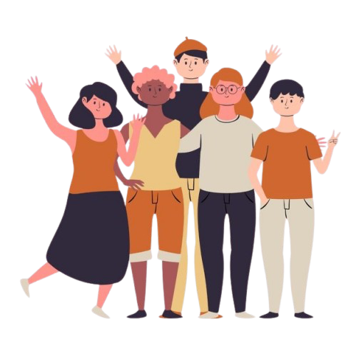

¿QUIÉNES SOMOS?
En esta etapa tan crucial de la vida, la adolescencia, los padres enfrentan desafíos únicos y complejos. Nuestro objetivo es brindarte información clara y accesible sobre los distintos padecimientos mentales que pueden afectar a tus hijos durante esta fase de crecimiento.
CONOCER ES AYUDAR
La adolescencia es un viaje lleno de descubrimientos, pero también puede ser un período desafiante para muchos jóvenes. En Amor de Padres, entendemos que como padres, deseas lo mejor para tus hijos, y es fundamental estar informado sobre los problemas de salud mental que pueden surgir en esta etapa.
“Ser PAPÁ es amar sin limítes y guiar con el CORAZÓN.”
“Los adolecentes necesitan limítes, pero también mucha contenció.”
De igual manera sabemos que cada hijo es único, y es fundamental estar preparados para ofrecerles el apoyo necesario. Te invitamos a explorar nuestro contenido, pedir ayuda cuando sea necesario y formar parte de una comunidad donde juntos podemos ayudar y crecer. ¡Tu papel como padre es invaluable en el bienestar emocional de tus hijos!